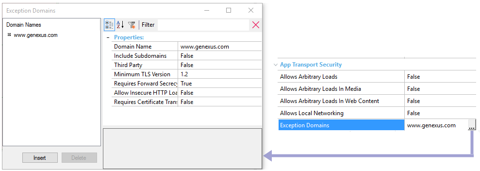

This group of properties is available for Main Smart Device objects and is located under the App Transport Security properties group. Allows insecure communication with particular servers. Introduction
In the case of Android, this is fulfilled from Android 9 version. Official notes:
These properties give the developer the ability to override the default OS settings. PropertiesAllows Arbitrary Loads propertyValues
The default value is False.Setting this property to True may be easier to configure, but disabling this security feature is not recommended. Note: When working with the Android generator, this property allows the HTTP cleartext communication.
Allows Arbitrary Loads In Media propertyIt's analogous to Allow Arbitrary Loads property but restricted to media content. Allows Arbitrary Loads In Web Content propertyIt's analogous to Allow Arbitrary Loads property but restricted to web content.
Allows Local Networking propertyIt's analogous to Allow Arbitrary Loads property but restricted to load local resources.
Exception Domains propertyIt is a list of domains that do not conform to the requirements. For each exception domain, a set of properties must be configured.  Domain NameThe name of the domain. Example: www.testdomain.com Include SubdomainsBoolean value for applying the overrides to all subdomains of the top-level domain. Example: if the Domain Name is "testdomain.com" then "www.testdomain.com" and "sample.testdomain.com" will both use these settings. False is the default value. Third PartyIf the domain is not controlled by the developer, it must be set to True. For example, for domains external to the application. False is the default value. Minimum TLS VersionSpecifies the minimum TLS version for the connections. The default value is 1.2. Requires Forward SecrecySet to False if the connection does not allow forward secrecy. True is the default value Allow Insecure HTTP LoadsBoolean value for overriding the requirement that all connections use HTTPS. Use this key to access domains with no certificate, or with an error for a self-signed, expired, or hostname-mismatch certificate. False is the default value. Requires Certificate TransparencyA Boolean value to indicate if Certificate Transparency is required. False is the default value.
Note
TroubleshootingIf these properties are not configured correctly, the application will not work as expected. To be more specific, some network connections may return(1) something similar to the following:
"requestFail": {
"url": "https://www.your.domain.com/some/url",
"error": {
"domain": "NSURLErrorDomain",
"localizedDescription": "An SSL error has occurred and a secure connection to the server cannot be made.",
"code": -1200
}
}
This means that the network domain www.your.domain.com does not support the configuration required by iOS 9. You can use the nscurl utility in your OS X installation to check the domain. From a Terminal window: /usr/bin/nscurl --ats-diagnostics https://www.your.domain.com This tool runs a series of checks and will output the settings you need for the domain. For example, if the output looks as shown below (only a part of it is shown here): --- TLSv1.1 with PFS disabled and insecure HTTP allowed 2015-10-22 15:10:34.979 nscurl[50131:341576] CFNetwork SSLHandshake failed (-9801) 2015-10-22 15:10:35.038 nscurl[50131:341576] CFNetwork SSLHandshake failed (-9801) 2015-10-22 15:10:35.053 nscurl[50131:341576] CFNetwork SSLHandshake failed (-9801) 2015-10-22 15:10:35.054 nscurl[50131:341576] NSURLSession/NSURLConnection HTTP load failed (kCFStreamErrorDomainSSL, -9801) Result : FAIL --- TLSv1.0 with PFS disabled and insecure HTTP allowed Result : PASS --- In GeneXus, you'll have to set TLS to 1.0 and Requires Forward Secrecy to False. (1) When executed in Debug mode from Xcode, the text is shown in the Console. Note: nscurl requires Mac OS 10.11 (El Capitan) (Ref. http://stackoverflow.com/questions/32723623/how-do-i-install-nscurl-on-mac-os-x-10-10-yosemite) AvailabilityAvailable since GeneXus X Evolution 3 Upgrade 5 for iOS. Available since GeneXus 16 upgrade 3 for Android. |
| Backlinks | |
| Deploy to cloud property | Dynamic Services URL property |
| Native Mobile Main object properties |